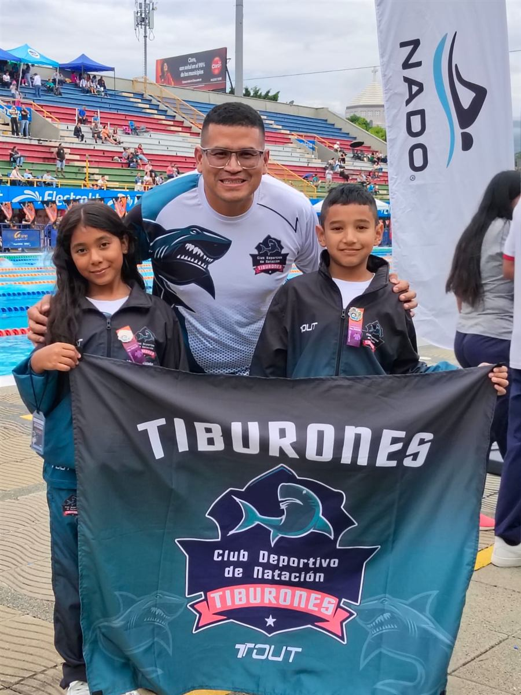
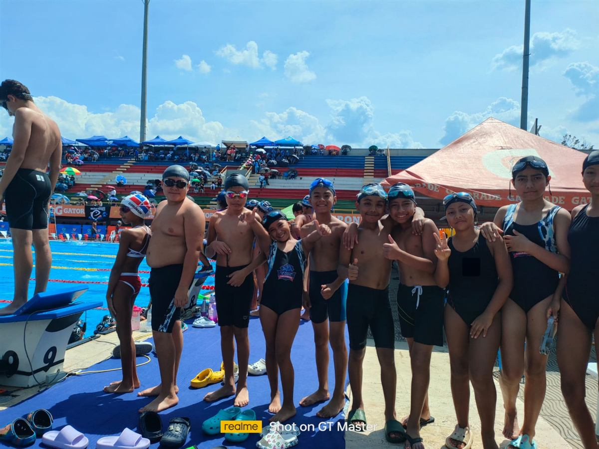
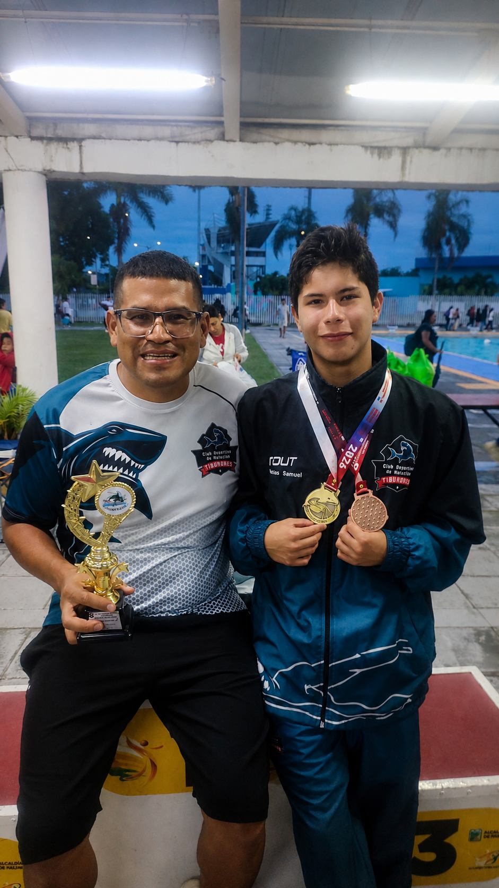
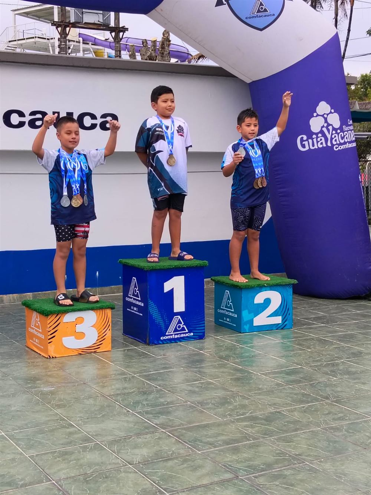
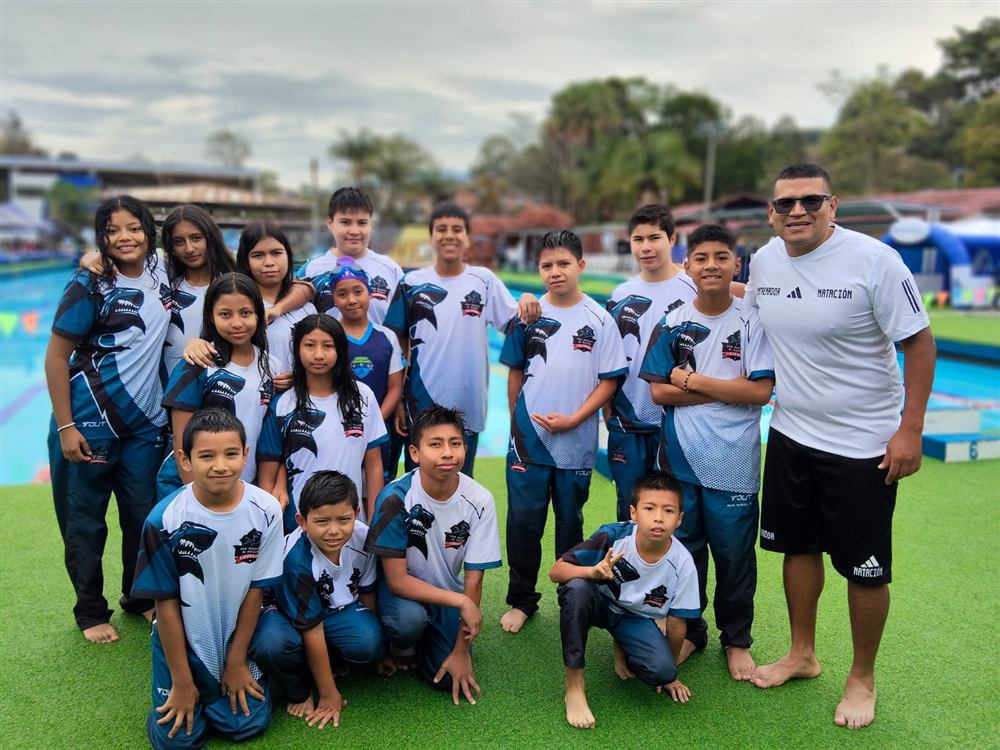
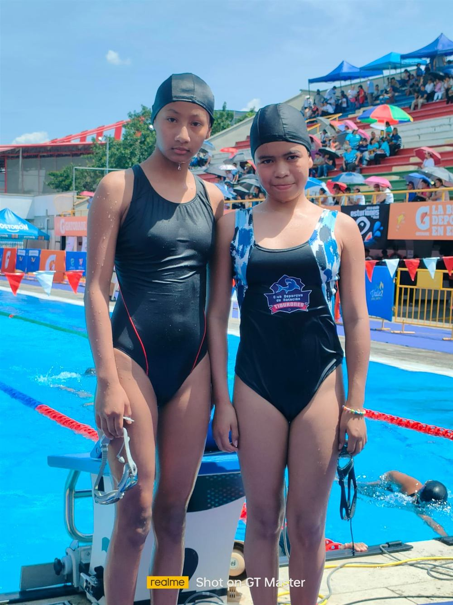

Sumate al Club Tiburones
Formamos nadadores con proyección competitiva en Popayán y el Cauca. Técnica, disciplina y una oportunidad real de vida a través del agua.

Un semillero que nació en la vereda de Torres
El Club Deportivo Tiburones nació hace 4 años en la vereda de Torres, pensado para la población más vulnerable de la zona. Hoy contamos con dos etapas: la formativa (adaptación, iniciación y perfeccionamiento) y la competitiva, con 14 niños y niñas representando a Popayán y al Cauca en torneos de todo el país.
Nuestro objetivo es desarrollar el proceso integral de preparación de cada deportista, garantizando el dominio técnico de los cuatro estilos de nado y orientando el proceso hacia los más altos niveles de rendimiento y logro competitivo.
Misión, visión y valores
Misión
Formar nadadores con proyección competitiva, promoviendo la excelencia deportiva y el desarrollo integral de niños, niñas y jóvenes a través de la natación.
Visión
Consolidarnos como un proyecto deportivo de alto impacto, combinando la masificación de la natación con la formación competitiva y la representación de Popayán y el Cauca.
Valores
Disciplina, perseverancia, trabajo en equipo y responsabilidad, dentro y fuera del agua.
Nuestros logros
En pocos años, Tiburones ya compite de igual a igual en el escenario nacional e internacional.
3 torneos internacionales
Participación destacada en Cali, con 14 nadadores del club en competencia.
Top 10 nacional
Deportistas del club ubicados entre los diez primeros del ranking de Colombia.
Podio de oro
Primer lugar conseguido en una de las pruebas del calendario federado.
Podio de bronce
Tercer lugar en competencia oficial, sumado a un cuarto puesto destacado.
Categorías y etapas
Un proceso técnico, físico y humano que acompaña a cada nadador desde el primer contacto con el agua hasta la alta competencia.
Adaptativa
Primer contacto con el agua: adaptación, seguridad y confianza para los más chicos.
Iniciación
Habilidades acuáticas básicas y primer acercamiento a los cuatro estilos.
Perfeccionamiento
Consolidación técnica de los cuatro estilos: libre, espalda, pecho y mariposa.
Infantil A, B y Prejuvenil
Formación técnica avanzada, con miras puestas en la etapa competitiva.
Alto rendimiento
Equipo competitivo que representa a Popayán y el Cauca en torneos nacionales e internacionales.

Nuestro cuerpo técnico
El perfil de nuestros entrenadores exige formación y experiencia real en el agua, no solo en la teoría.
- Profesionales en Entrenamiento Deportivo o áreas afines, con mínimo un año de experiencia en natación carreras.
- Certificación vigente en salvamento acuático.
- Trayectoria y logros destacados como dirigentes deportivos.
- Formación en planificación, evaluación y desarrollo de procesos orientados al rendimiento y a la formación integral del deportista.
Instalaciones
Entrenamos y competimos en piscina olímpica climatizada: 50 metros de largo por 25 de ancho, con una profundidad promedio de 2.40 m, bajo especificaciones reglamentarias para competencias oficiales.




Galería
Torneos, entrenamientos y salidas: así vive el día a día Tiburones.







Hablemos
Escribinos por WhatsApp y te contamos todo sobre el club.
Escribinos por WhatsApp- Vereda de Torres, Popayán, Cauca
- facebook.com/ClubDeporTiburones
- @clubdeportiburones